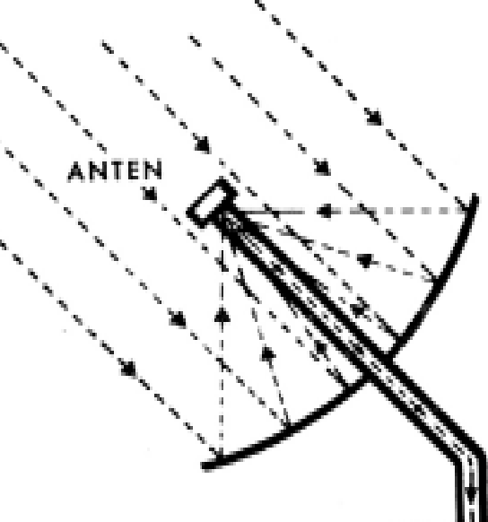
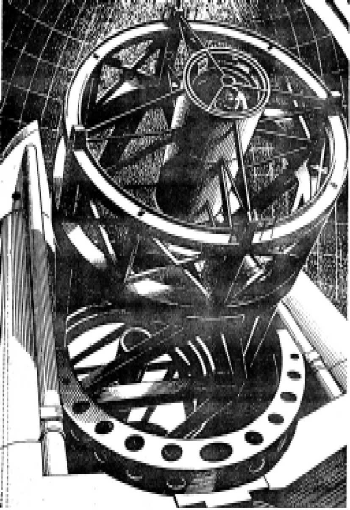
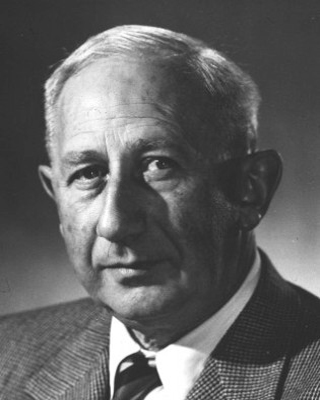

Lúc đầu, tạp âm vô tuyến trong chòm sao Cygnus (Thiên Nga) được Grote Reber chú ý đến. Sau đó, ba người Anh tên là Stanley, S.J. Parson và J.W. Phillips lập một bản đồ chính xác hơn về tạp âm này bằng cách dùng các bước sóng dài hơn. Họ thấy rằng nó tập trung tại một vùng nhỏ mà họ gọi là Cygnus A.
Thế nhưng, vùng nhỏ này bao trùm một phần rất lớn của bầu trời. Các nhà thiên văn quang học quan sát vùng này và thấy nó lấm tấm với rất nhiều thiên thể. Một số là các sao ở gần, một số khác là các thiên hà ở xa. Họ không thể chọn ra thiên thể nào trong số chúng là nguồn phát sóng vô tuyến. Vậy thì, làm thế nào để nhận dạng nguồn phát sóng vô tuyến cực mạnh này?
Vào lúc đó, Martin Ryle, giám đốc đài thiên văn vô tuyến Mullard gần Cambridge (Anh), quyết định rằng phải cần một kính viễn vọng vô tuyến chính xác hơn. Một hôm, ông nói: "Có thể một giao thoa kế vô tuyến sẽ làm công việc này".
Ryle là chuyên gia về các giao thoa kế. Một số được làm ra có anten kép, tín hiệu thu bởi hai anten được kết hợp để cho ra giá trị đọc cuối. Hệ thống hai anten này tạo ra một thiết bị hiệu quả hơn là một anten. Ngoài ra, anten kép là các bộ tìm hướng đặc biệt tốt. Nếu tín hiệu từ một nguồn vô tuyến đến đồng thời tại mỗi anten, thì giữa hai anten sẽ cho thấy khoảng cách từ nguồn đến mỗi anten là như nhau. Tuy nhiên, nếu nguồn hơi nghiêng về một bên, thì tín hiệu sẽ không đến đồng thời và sự khác biệt này lập tức được thể hiện trên máy ghi.
Trong số các giao thoa kế của mình, Ryle có hai đĩa có thể xoay được, đường kính 8,2m. Hai đĩa này đã từng được dùng để dò tìm rađa. Giờ đây, chúng được dựng cách nhau 305m trên một máng đãi quặng chưa sử dụng ở vùng nông thôn. Cùng với nhau, chúng tạo thành một thiết bị dò đặc biệt chính xác. Với hai đĩa này, Ryle nghĩ rằng ông sẽ có thể tìm ra vị trí chính xác của Cygnus A.
Graham Smith, một thành viên khác của nhóm Đại học Cambridge, cũng rất quan tâm đến việc xác định vị trí của các nguồn vô tuyến. Giờ đây, ông gánh vác công việc khó khăn để tìm cách xác đính rõ Cygnus A.
Tháng Tám 1951, bộ anten đĩa kép được xoay hướng về một vùng nhỏ của bầu trời. Ngồi bên trong phòng điều khiển, Smith quan sát trong khi máy ghi dữ liệu tự động ghi lại các tín hiệu mà anten thu được. Một đường dọn sóng vạch ra trên cuộn giấy của máy ghi.
Bên ngoài, những nông dân đang ra sức thu hoạch vụ mùa, tiếng ồn từ các động cơ máy kéo của họ vọng vào cửa sổ đang mở của phòng điều khiển. Song các động cơ ấy không ảnh hưởng đến việc thu sóng vô tuyến, do các nhà thiên văn Cambridge đã lắp vào chúng các bộ triệt nhiễu.
Các sóng càng lúc càng lớn được vạch ra khi tín hiệu mạnh dần. Smith hăm hở cúi thấp xuống để nhìn kỹ vào đường vạch dợn sóng trên cuộn giấy. Giờ này sang giờ khác, nguồn tạp âm len lỏi càng lúc càng gần đến vị trí trung tâm giữa hai đĩa anten. Ông bồn chồn lau mắt kính rồi chăm chú nhìn kỹ hơn. Ông muốn thấy điểm chính xác, mà tại đấy tín hiệu là mạnh nhất.
Khoảnh khắc ấy đến khi ông không biết chắc liệu các sóng vẫn đang trở nên lớn dần hay không. Rồi ông thở phào nhẹ nhõm: đỉnh sóng đã và đang đi qua. Như vậy, tín hiệu của Cygnus A đã chạy ngang qua điểm trung tâm giữa hai đĩa anten.
Ông đứng lên và bước vội dọc theo hành lang dẫn đến văn phòng của Ryle và thông báo:

Máy Thu
Trên đĩa anten của kính thiên văn vô tuyến, các sóng vô tuyến đến từ vũ trụ được hội tụ và đưa vào một máy thu. Sau khi khuếch đại, chúng được ghi lại dưới dạng một đường dợn sóng cho thấy sự biến thiên cường độ của tín hiệu.
- Martin, tôi thu được kết quả rồi! Hãy đến xem.
Ryle nhảy chồm lên và theo Smith đến phòng điều khiển. Máy ghi vẫn tiếp tục hoạt động, ghi lại đều đặn đường biểu diễn trên cuộn giấy. Ryle cầm lên một đoạn và nhìn dọc theo nó, ông mỉm cười với vẻ hài lòng rồi nói:
- Graham, chúng ta có thể đề nghị Baade tìm nguồn này bằng kính viễn vọng 508cm.
Trên núi mặt bàn Palomar ở miền nam bang California, một đài quan sát với mái vòm có đường kính 42m in bóng trên nền trời xanh. Bên trong đài là kiệt tác hoàn hảo của Hale: kính viễn vọng phản xạ 508cm. Trị giá 6 triệu đô la và nặng 140 tấn, nó là kính viễn vọng lớn nhất thế giới vào thời bấy giờ. Ống kính rộng đến mức người quan sát có thể ngồi trong một cái lồng đặt bên trong ở phần trên của ống kính, nhưng vẫn đủ cho ánh sáng đi qua và chiếu đến gương lớn ở phần dưới.
Các nhà thiên văn dùng kính viễn vọng này để quên đi thời gian hiu quạnh ở Pasadena và đợi đến lượt mình quan sát. Một người trong số họ là Walter Baade, từ lâu đã quan tâm đến các nguồn vô tuyến. Vào cuối tháng Tám, ông bước vào văn phòng của mình ở đài thiên văn Núi Wilson và bắt gặp trên bàn làm việc một phong thư mỏng được gửi theo đường máy bay. Thư này là của Graham Smith gửi cho ông.
Baade xé mở phong thư, đọc lướt qua và khẽ kêu lên ngạc nhiên. Rồi ông đi sang văn phòng kế bên, nơi bạn ông là Rudolf L. Minskowski đang làm việc. Hai ông cùng nhau bàn bạc những gì viết trong thư. Minskowski cất tiếng:
- Đây là vị trí chính xác nhất đã thu được. Ông sẽ tìm nó chứ?
Baade tuyên bố:
- Cũng đáng thử đấy. Để xem liệu tôi có kham nổi với nó hay không trong chuyến đi sắp tới đến Palomar.
Đó là ngày 4 tháng Chín, khi cơ hội sử dụng kính viễn vọng lớn nhất đã đến. Chiều hôm ấy, Baade tạm biệt vợ là Johanna và đi ô tô vượt 205km đường đến đài thiên văn Núi Palomar. Ông sẽ ở đấy trong mười ngày.
Ban ngày, mái vòm đóng lại nhằm bảo vệ gương tránh nhiệt của Mặt trời; lúc hoàng hôn, nó mở trượt ra. Baade leo lên chiếc thang máy nhỏ dẫn đến một boong chạy xung quanh bên trong của đáy mái vòm, rồi bước lên một bệ di động đưa ông lên đến miệng của ống kính. Bây giờ, ông có thể bước từ bệ để chui vào lồng rộng 1,5m. Trong lồng này, ông sẽ quan sát qua đêm, chụp hết ảnh này sang ảnh khác. Ông đang trong tâm trạng căng thẳng như một tay đua ở vạch xuất phát, quyết tâm giành cái tốt nhất trong thời gian cho phép.
Đêm ấy thời tiết rất tốt. Trong khi Baade ngồi trong kính viễn vọng, một người phụ tá điều khiển kính hướng vào mục tiêu đầu tiên. Đó là thiên hà Andromeda mà ông đang nghiên cứu kỹ, nhằm sửa lại tỉ xích khoảng cách tói sao biến quang của Hubble.

.
Trong nhiều giờ liền, Baade thực hiện có phương pháp chương trình được sắp xếp của mình. Sau đó, ngay trước lúc nửa đêm, ông chuyển sang quan sát Cygnus A. Kính viễn vọng được hướng vào vị trí chính xác, nơi nguồn tạp âm sẽ phù hợp với vị trí mà Graham Smith đưa ra. Baade chụp hai kiểu phim.
Chiều hôm sau, ông hiện ảnh trong buồng tối của đài quan sát. Ngay khi trông thấy âm bản, ông biết rằng mình đang nhìn vào một cái gì đó khác thường. Trên khắp bức ảnh là các thiên hà - hơn 200 đối tượng - nhưng thiên hà nằm ngay giữa bức ảnh không giống bất kỳ thiên hà nào mà ông đã thấy trước đây. Nó có một nhân kép, dường như bị biến dạng, như thể ở đó có một lực hút không bình thường.

Baade miên man suy nghĩ về bức ảnh trong bữa ăn tối đêm ấy. Dạng kép này có nghĩa là gì? Liệu nó có phù hợp với nghiên cứu lý thuyết thuần túy mà ông đã tiến hành trước đó trong năm? Cùng với nhà thiên văn Lyman Spitzer ở đài Princeton, ông thử tìm xem điều gì sẽ xảy ra nếu hai thiên hà va chạm. Họ đồng ý với nhau là một vụ va chạm như vậy không chắc sẽ xảy ra, nhưng cũng có khả năng xảy ra. Có thể đây chính là bức ảnh của một vụ va chạm như vậy!
Đêm ấy, ông xem lại một lần nữa các bức ảnh trước khi chui vào lồng quan sát. Ông muốn gắn chặt chúng trong trí và nghĩ về chúng. Suốt đêm ông suy nghĩ khi tiếp tục với công việc thường lệ của mình; càng suy nghĩ, ông càng nhận ra rằng mình đúng.
Trở về đài thiên văn Núi Wilson, Baade nói cho Minskowski biết ý nghĩ của ông. Minskowski nhấc cặp kính ra nhìn Baade vẻ chế giễu, rồi lại đeo kính vào. Sau một lát, ông nói:
- Không, Walter, tôi không đồng ý. Trở ngại ở đây là ông và Spitzer đã mơ về sự va chạm của các thiên hà. Lẽ tự nhiên là ông muốn thấy chúng, nhưng ông có bằng chứng nào để cho thấy các khối ánh sáng ấy thực sự là gì? Hoàn toàn không có!
Baade thất vọng. Ông thăm dò ý kiến các nhà thiên văn khác, nhưng họ đồng ý với Minskowski. Ông chỉ còn biết thở dài buồn bã.
Nhưng ông không quên nó. Những người khác cũng không để ông quên nó. Sáu tháng sau, ông nghe Minskowski mang nó ra giễu cợt tại một hội thảo chuyên đề. Nhưng rồi Baade cứng cỏi nói:
- Đánh cuộc với ông một ngàn đô la là tôi đúng.
Minskowski cười to:
- Tôi không đủ khả năng bỏ ra một món tiền lón như thế. Ngoài những thứ khác ra, tôi vừa mua một ngôi nhà.
Baade vẫn khăng khăng:
- Thôi được, một thùng rượu whisky vậy.
Minskowski lắc đầu:
- Thậm chí cái đó tôi cũng không đủ khả năng.
Cuối cùng, hai người đồng ý đánh cuộc chỉ một chai whisky. Nhưng làm thế nào họ có thể chứng minh liệu Baade đúng hay sai? Minskowski nói:
- Nếu các thiên hà thực sự va chạm thì khí giữa các sao sẽ gây tác động cực kỳ lớn. Có thể sẽ có khí neon V ở đấy. Sự kích hoạt sẽ bóc đi các electron ngoài cùng của các nguyên tử neon.
Baade tuyên bố:
- Vậy thì đó là cách để kiểm tra. Nếu neon V có ở đấy, nó sẽ biểu lộ trên ảnh phổ. Ông có thể chụp ảnh hiện tượng ấy ở đài thiên văn Núi Wilson.
Minskowski đồng ý làm công việc tinh tế này. Vài tuần sau, vào tháng Năm năm 1952, Baade đang ngồi trong văn phòng thì Minskowski bước vào với gương mặt tiu nghỉu. Baade biết rằng mình thắng cuộc, ông hóm hỉnh cất tiếng:
- Chúng ta sẽ chọn nhãn hiệu whisky nào?
Minskowski rút ra bức ảnh phổ. Trên ảnh là vạch sẫm cho thấy neon V nổi bật rõ nét. Trông như thể Baade nói đúng, một vụ va chạm rất lớn đã xảy ra cách xa 700 triệu năm ánh sáng và họ là các nhân chứng.
Ngày nay, các nhà thiên văn không tin chắc đến như thế. Thiên thể kỳ lạ trong Cygnus A có thể là một cặp thiên hà va chạm, nhưng cũng có thể có các giải thích khác. Một giải thích cho rằng một thiên hà đơn đang tách ra làm hai phần. Một giải thích khác cho rằng một thiên hà đang vỡ ra sau một quá trình suy sụp mãnh liệt hướng vào bên trong.
Song điều chắc chắn là các sóng vô tuyến không xuất phát từ các vùng có thể nhìn thấy này, mà từ hai quầng sáng lớn có dạng cánh, ở xa khoảng 100.000 năm ánh sáng. Điều này đã được hai nhà thiên văn Roger Jennison và Morinal K. Das Guptal của đài Jodrell Bank phát hiện ở Anh. Tại sao hai quầng này tồn tại vẫn còn là điều bí ẩn.
Giờ đây, nhiều thiên hà với các quầng đôi như vậy đã được biết đến. Tuy trông khác nhau, nhưng tất cả chúng đều phát ra sóng vô tuyến cực kỳ mạnh. Các nhà thiên văn gọi chúng là các thiên hà hoạt động, bởi vì chúng rất khác với các thiên hà bình thường, chẳng hạn Thiên Hà của chúng ta.
Ngày nay, các nhà thiên văn đang cố tìm hiểu tại sao các thiên hà hoạt động tồn tại. Nếu cuối cùng họ tìm được giải đáp, chúng ta sẽ biết thêm nhiều về bản chất của các thiên hà và của vũ trụ.